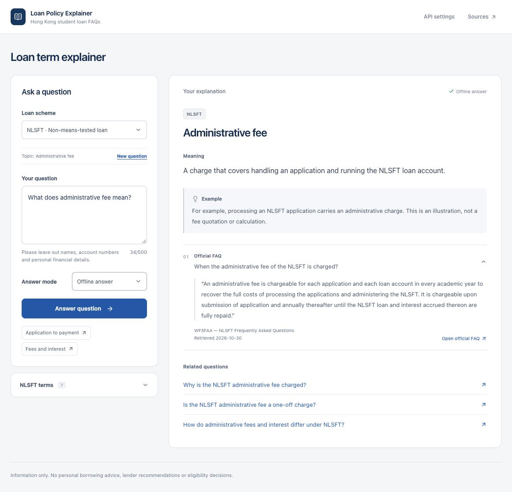

HKU AILT9019 · Group 46
Understand your student loan terms
For first-time Hong Kong student-loan applicants who need to understand terms in the NLSFT and TSFS FAQs, with plain-English explanations and links to the official sources.
Explore example questionsExample questions
Saved examples from the project. Open a question to see its answer.
What does administrative fee mean?
A charge that covers handling an application and running the NLSFT loan account.
Official NLSFT FAQ · Interest and administrative fees
What is accrued interest?
Accrued interest is the interest building up on the loan. For NLSFT, it begins at loan drawdown and continues until full repayment.
Official NLSFT FAQ · Interest and administrative fees
Should I borrow HK$5,000?
The app declines personal borrowing advice. Contact the Student Finance Office for questions about your own situation.
How it works
Our team curated official FAQ excerpts by loan scheme and built scheme-specific term matching, source citations and checks for questions outside the available evidence. In Bailian mode, the model selects from reviewed answers for the matched material.
Choose a scheme
Select NLSFT or TSFS in the app and ask a short question in English.
Find relevant evidence
The app checks the request and looks for relevant passages in its reviewed FAQ collection.
Read the explanation
For supported questions, the app shows a plain-English answer, a hypothetical example and the supporting official quotation.
Run evidence
We ran these two questions in the desktop app with the browser offline. The supported question returned an explanation, an example and an official source. The boundary case returned a refusal.
Supported question
With NLSFT selected, we entered “What does administrative fee mean?” The app matched the fee to the reviewed NLSFT FAQ excerpt. It explained that the charge covers handling the application and running the loan account, and linked to the official FAQ.
Boundary case
We then asked “Does the administrative fee reduce the lifetime borrowing limit?” The stored excerpts covered the two terms separately. The app refused to infer a relationship and directed the reader to the full FAQ.


Scope and limitations
The app covers selected terms and procedures from the official NLSFT and TSFS FAQs. Some questions may require rephrasing. For personal borrowing decisions, eligibility or the latest policy, consult the Student Finance Office.
Run the full app
Download and extract the release. Open Open-Mac.command on Mac or Open-Windows.cmd on Windows, and keep the launcher window open. Choose Offline answer to reproduce the examples above. To use Bailian, connect your key under API settings and select AI explanation.